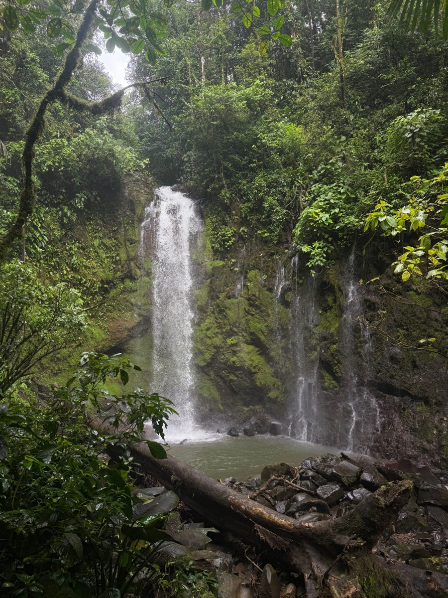
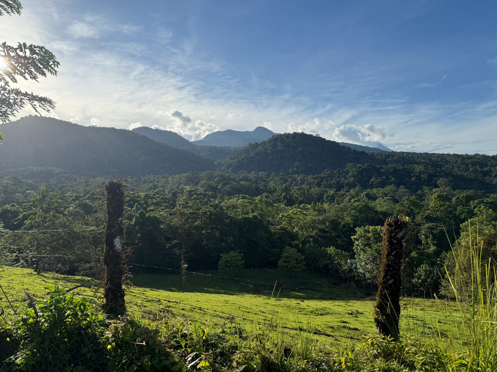
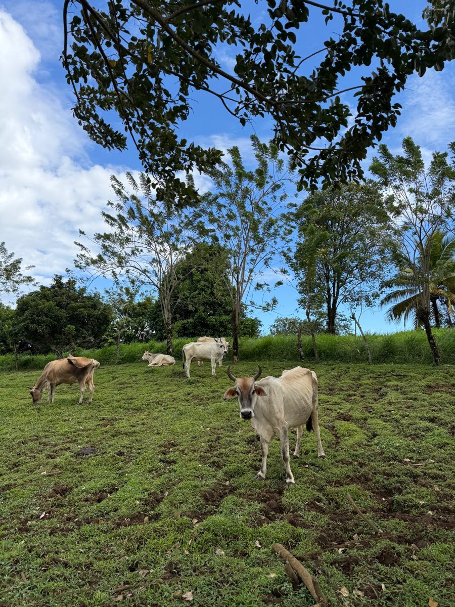
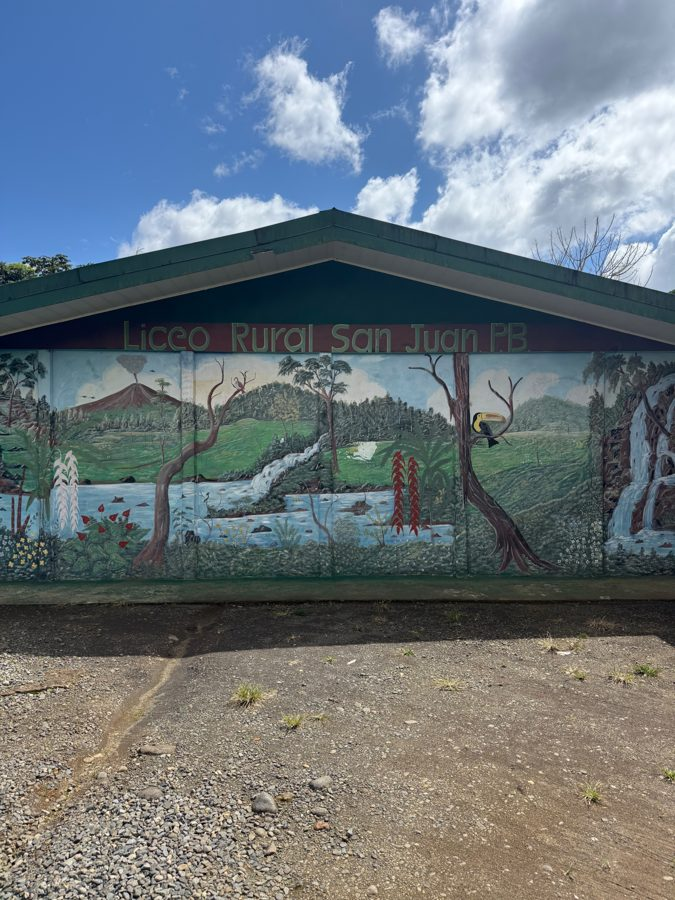

Nuestra historia, nuestra gente, y algunos números que nos describen.
Las primeras familias llegaron a San Juan alrededor de 1946, abriendo camino y construyendo las primeras viviendas. Cruzar el río Peñas Blancas era todo un reto: primero se hacía en andarivel, luego por un puente hamaca, hasta que finalmente se construyó un puente de cemento.



Funciona dentro de la Escuela Emilio Castro Gómez, atendiendo a los niños y niñas en edad preescolar de la comunidad.
Abrió sus puertas en 1987 y atiende de primero a sexto grado, en horario de la mañana.

Abrió en 2006 y ofrece educación secundaria de sétimo a onceavo año, con talleres socio-productivos y un mariposario construido por los propios estudiantes en 2022.
"La vida en una comunidad rural nos enseña que la riqueza no siempre se mide en dinero, sino en solidaridad. Aquí un vecino no es solo alguien que vive cerca, es familia. Aquí el esfuerzo diario tiene el aroma a café recién hecho y el sonido del viento entre los árboles."
— Ligia Villegas Trejos, Finca La Esperanza"El lugar más lindo del mundo."
— Álvaro Castro